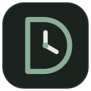

daymarkcoursework bridge
DAYMARK ACCOUNT
Connect your workspace
Sign in to Daymark in your browser and approve the request there. The extension connects automatically afterward.
Daymark sign-in stays in the browser; the extension never asks for your password.
Advanced connection settings
Last sync: Never
SCHOOLogy
Your coursework
Open a signed-in Schoology page to scan coursework.
Courses
Detected on this page- Scan a Schoology course page to see your courses.
Assignments
Due date order- Nothing imported until Schoology data is found.